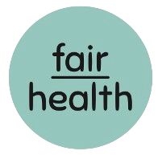
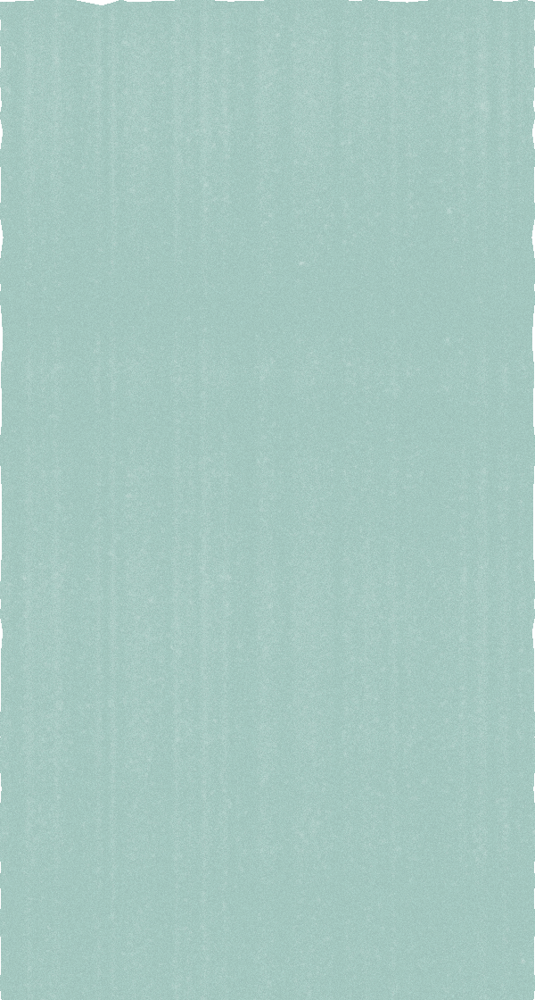
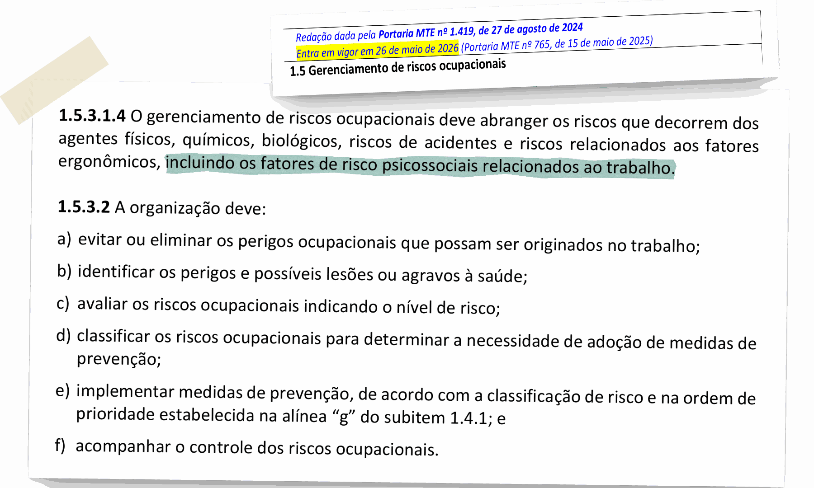

fairhealth
Medir e cuidar

andam juntos.
Fale com a gente pelo link abaixo
e conheça a fairdata e o
Escritório do Cuidado.

fairhealthSaúde mental no trabalho
546,2
mil
afastamentos do trabalho
por saúde mental
no Brasil em 2025, concedidos pelo INSS.
Fonte: Ministério da Previdência Social
E agora, RH?
Deslize para o lado →
O dado
546,2 mil licenças por
transtornos mentais em 2025,
o segundo recorde seguido.
472,3 mil
licenças

546,2 mil
licenças
2024
2025
+15,7%
Fonte: Ministério da Previdência Social (nota oficial, jan/2026). Benefícios por incapacidade temporária concedidos pelo INSS por transtornos mentais e comportamentais: 472.328 em 2024 e 546.254 em 2025.
A norma
NR-01
Desde maio de 2026, a NR-01 pede que a empresa identifique e gerencie os riscos psicossociais, junto com os outros riscos ocupacionais.

Fonte: NR-01 (texto atualizado publicado pelo Ministério do Trabalho e Emprego), item 1.5.3.1.4, na redação da Portaria MTE nº 1.419/2024. Em vigor desde 26/05/2026 (Portaria MTE nº 765/2025).
Medir e cuidar:
a norma pede os dois.
Medir
b) Identificar os perigos
c) Avaliar os riscos
d) Classificar os riscos
Com a fairdata: o diagnóstico dos riscos do grupo.
Cuidar
e) Implementar medidas de prevenção
f) Acompanhar o controle dos riscos
Com o Escritório do Cuidado: escuta, bioimpedância, smartwatches e acompanhamento.
→
A fairdata mede o risco. A fairhealth complementa com o cuidado.
Fonte: NR-01, item 1.5.3.2, alíneas b a f (Ministério do Trabalho e Emprego).
Medir mostra onde
está o risco.
Cuidar acontece onde
o trabalho acontece.
O Escritório do Cuidado é um espaço de atendimento médico e psicológico dentro da empresa. Ele reduz a principal barreira ao cuidado: o tempo e o acesso.
-
plantões de médicos, psicólogos e assistentes sociais
-
atendimento preventivo e medições com bioimpedância e smartwatches
-
plano de ação para cada colaborador, com encaminhamentos e acompanhamento
-
indicadores do grupo para o RH, anonimizados e agregados
Quanto mais perto, mais adesão. E é a adesão que gera resultado.
Medir e cuidar
andam juntos.
Fale com a gente pelo link abaixo
e conheça a fairdata e o
Escritório do Cuidado.

fairhealth